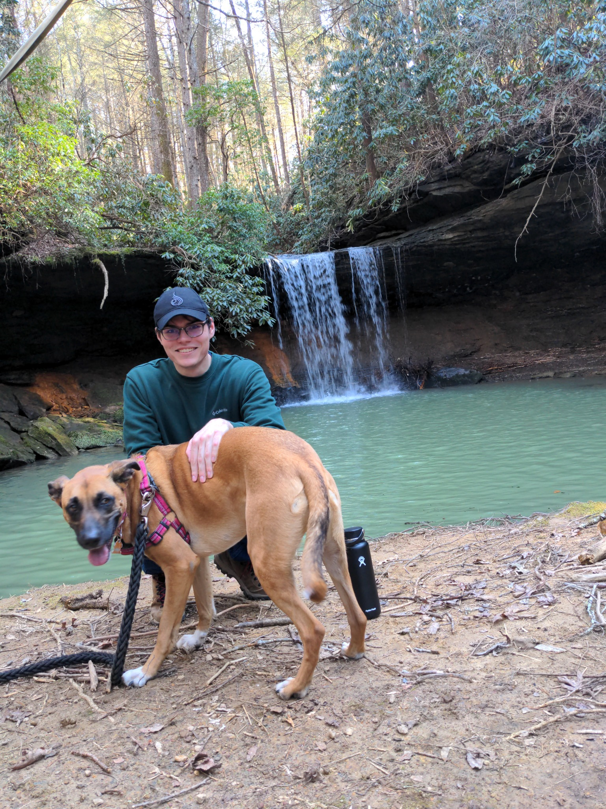

Jared Langford
My name is Jared, and I’m an Applied Mathematics and Information Science student at the University of Kentucky. Here you’ll find my résumé, contact information, LinkedIn profile, and future blog posts.

My name is Jared, and I’m an Applied Mathematics and Information Science student at the University of Kentucky. Here you’ll find my résumé, contact information, LinkedIn profile, and future blog posts.